Loading ...
Loading ...
 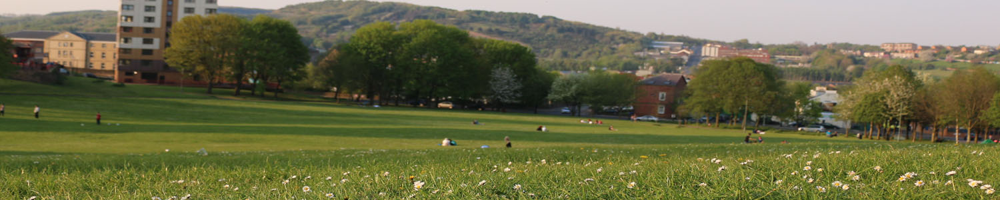
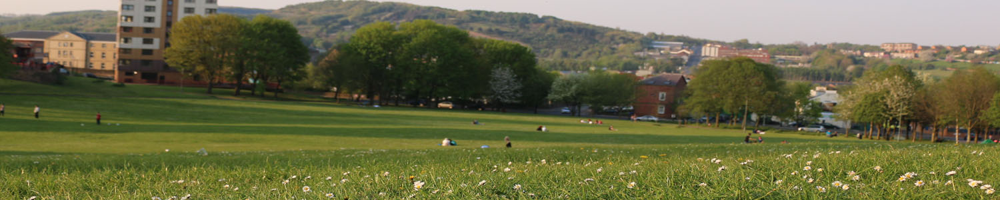


 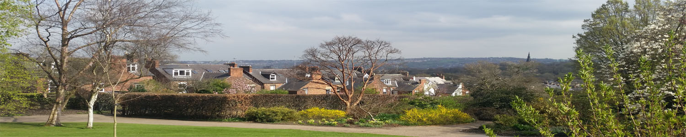
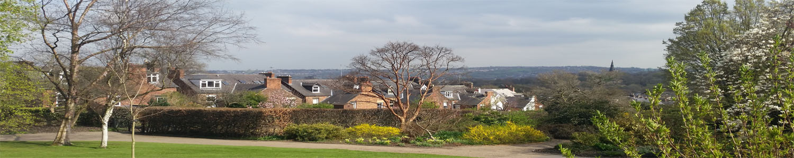

 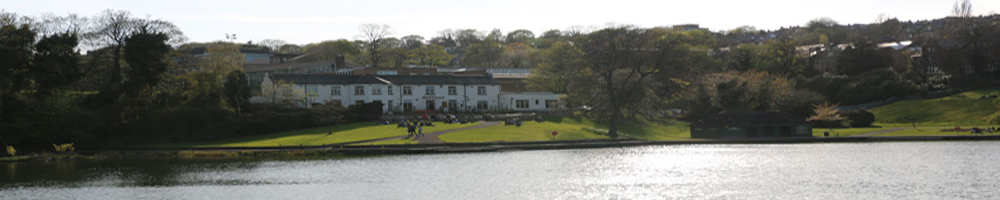
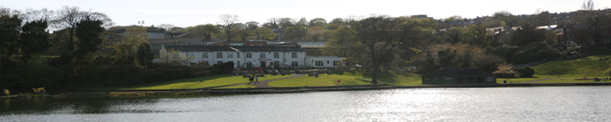
My Hobbies in Just a Few Words
 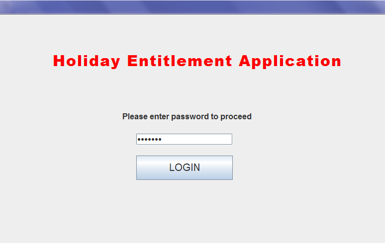
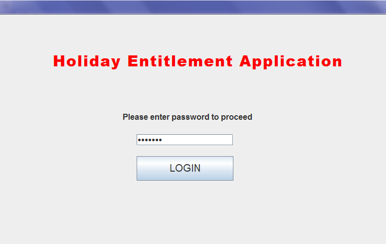
Coding
Before starting university I was not sure which way to follow and even though I felt a certain attraction to coding, I couldn't say it was a real passion. My first year at university was a really tough and steep one, due to the fact that I was not used to the system. I was just deployed in a completely foreign country and encountered many other difficulties, but I eventually made it through. Now, in my second year at the University of Sheffield, I can certainly say that this course highly suits me and I really enjoy transferring real-world knowledge to a machine's "brain", because I find it so amazing, exciting, but also challenging. Computer reaction to different inputs never stops surprising me.
Running
One run can change your day while many runs can change your entire life. I am always in a competition with myself, where I try to test and overcome my limits. This is one healthy hobby of mine which I practice at least twice a week, depending on the spare time I have. A fit body means a healthy mind, so I am always trying to stay healthy by just taking a break from daily activities and enjoy jogging in the park or whichever part of the nature I can put my exercise into practice.
Travelling
Life is only a journey and we are just some sort of travellers who roam through this world. I think that we should do the most of it, since it will eventually reach its end, as all the beautiful things do. Since a little child, I have enjoyed walking in nature and travelling. Here are some photos with places I've seen, from Greece, Germany, Bulgaria, Romania and United Kingdom. "The miracle is not to walk on water, the miracle is to walk on the green earth, dwelling deeply in the present moment and feeling truly alive" - Thich Nhat Hanh.


Volunteering
As a volunteer, I must admit that I don't always have the time to do it, instead I have the heart to do so. Helping different humanitarian causes certainly built up my confidence, making me understand the importance of helping the ones in need. I took part in many volunteering actions, while I was working for a local NGO in my home town - Mare Nostrum - and for Home Fundraising company, based in Sheffield. "The best way to find yourself is to lose yourself in the service of others"-Ghandi.
Full Gallery

 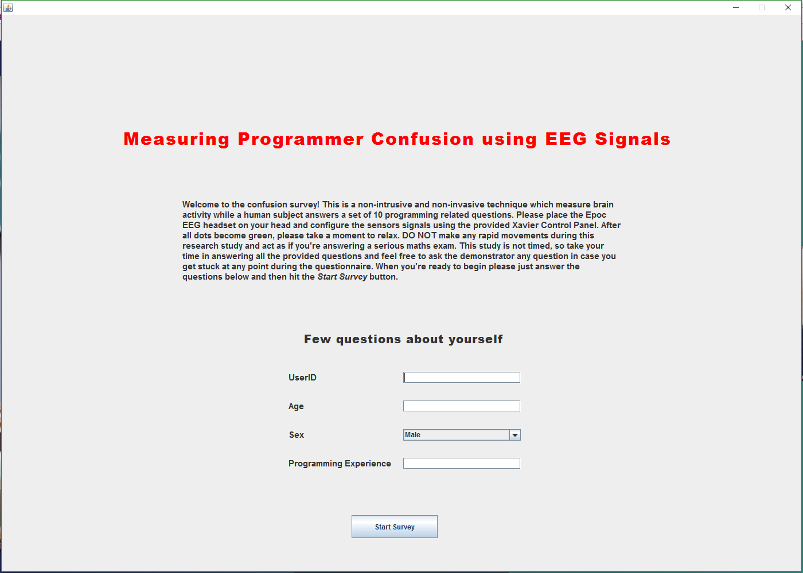
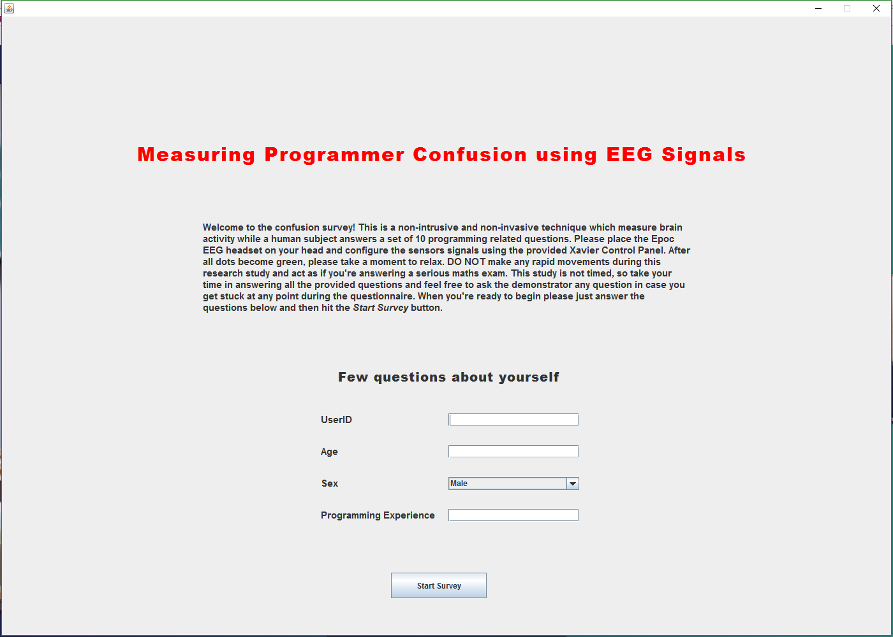
 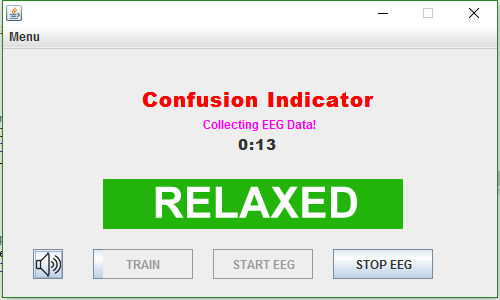
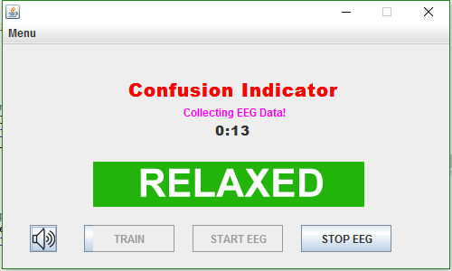


 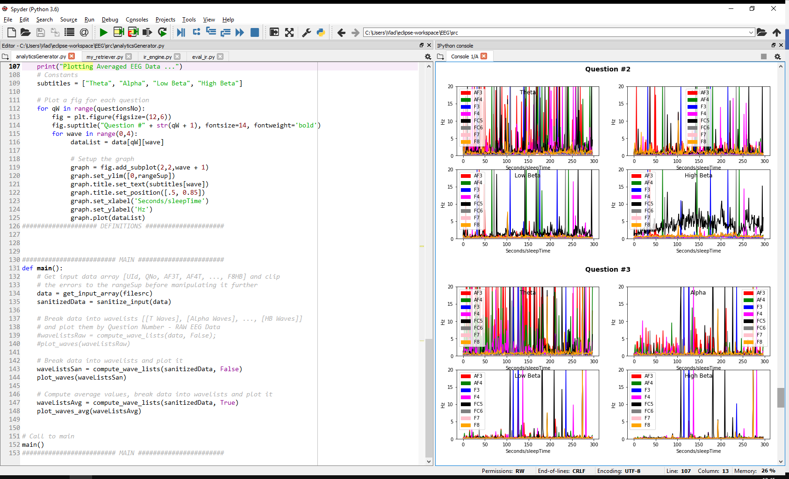
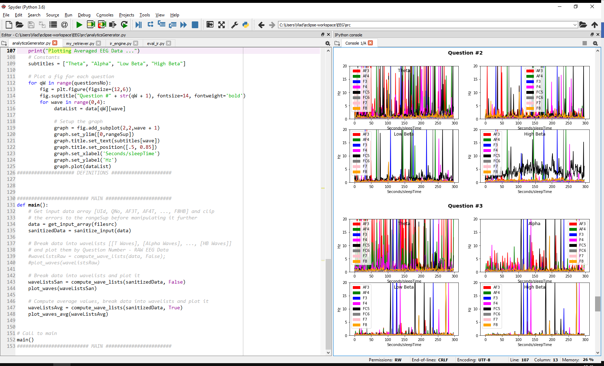